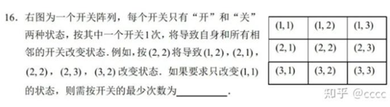
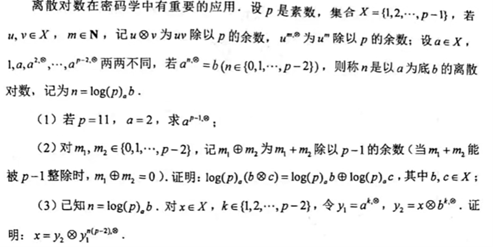
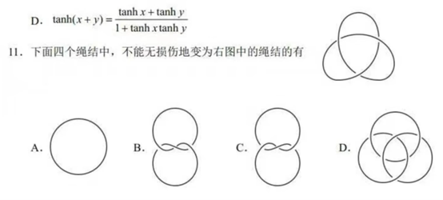
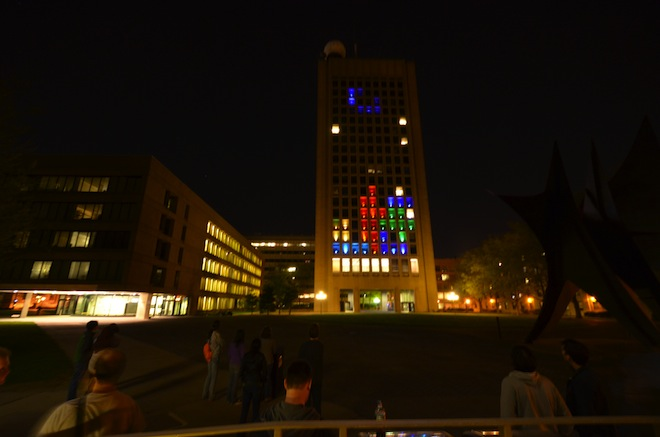

关于创造力的随想：教育模式给我们带来了什么
“所谓教育，不过是人对人的主体间灵肉交流活动（尤其是老一代对年轻一代），包括知识内容的传授、生命内涵的领悟、意志行为的规范，并通过文化传递功能，将文化遗产交给年轻一代，使他们自由地生成，并启迪其自由天性。”
——雅斯贝尔斯《什么是教育》[1]:3
前言
已经将近一个月没有发文章了，赶紧发一篇。
前段时间，中国大陆的高中“八省联考”数学试卷再一次激起了人们的讨论。
为什么是“又”？因为各类跨省的“联考”数学科目经常出现一些非常唬人（争议性强）的题目，例如：
- 2023年，“四省联考”第16题（填空题的最后一道）；
 - 2024年初，“九省联考”第19题（最后一道大题），从密码学的ElGamal算法情景设题，涉及费马小定理等数论知识；
 - 今年“八省联考”，第11题（多选题最后一道），涉及了纽结理论。当然，这道题不需要懂得拓扑学也可以轻松选出A和D这两个正确答案（B和C则需要画图或现场动手搓绳子验证）；

上述题目在网络上都有大量的优秀讲解。读者若有兴趣，也可以尝试在不使用高等数学知识的情况下完成这些题目。
这三道题都因与书本内容严重脱节而引起了巨大的争议。大家认为，这些远远超出正常高中生知识范围的题目，即使是压轴题，也不具备有效筛选卓越学生的能力，相反，这些运用大学知识可以轻松解决的问题被强行要求以高中知识作答，这种做法无论是在考察知识运用还是学科素养方面都是无效的，还会误导一些同学将精力用在练习这种“偏门”题目上，因小失大。
我们可以看到，在考试中的“创新”屡屡引起众人，尤其是学生的不满。学生的不满是很容易理解的，毕竟他们正是受到“创新”影响最大的人群。我们要关注的是，在被迫踏出舒适圈引发的抱怨背后，这些变革究竟适不适合当下中国绝大多数地区的教学现状。而现实是，尽管最近几年针对考试的改革开始注重对创新性思维的检测，但是教学一线的转变与适应仍然滞后，导致教学与考试严重脱线。
如果你有追问的习惯，肯定会提问：“中国的数学考试难度这么高，对数学人才的筛选和培养究竟起到了什么效果？”如果你有洞察世界的双眼和热衷针砭时弊的双唇，肯定也会反讽：“中国的数学考试难度这么高，那么这个国家的数学人才一定非常多吧！”
事实显然难以令人满意。要评价一个国家的科技水平，我们有诺贝尔奖作为量化参考标准；要评价一个国家的数学水平，我们应该以什么作为可供参考的统一的量化标准呢？
不熟悉作为学术的数学的人，第一时间会想到奥林匹克数学竞赛，用奥数金牌的数量来衡量一个国家的数学实力；对数学再熟悉一些的人们则会想到菲尔兹奖，在数学界有如诺贝尔奖的存在[2]，并且菲尔兹奖的获得难度甚于诺奖。
在我看来，奥数金牌数量和数学实力强弱之间确实存在相关性，但是这种相关性不意味着绝对的关系。考试是对运用已有知识、解决已有问题的检查，这种思维体操不涉及从已知到未知的跨越。而菲尔兹奖颁发给在数学界卓有贡献之人，“贡献”意味着创新，毫无疑问，创新能力才是确定一个国家在某一领域综合实力的决定性因素。因此，相较于奥数金牌而言，菲尔兹奖具有更高的含金量。
| 排名 | 国家 | 出现次数 | 金牌 | 银牌 | 铜牌 | 荣誉奖 |
|---|---|---|---|---|---|---|
| 1 | 中国 | 38 | 180 | 36 | 6 | 0 |
| 2 | 美国 | 49 | 146 | 119 | 30 | 1 |
| 3 | 俄罗斯 | 31 | 111 | 63 | 12 | 0 |
表1 奥数金牌获得量排名（前三，截至2023年）[3]§奖牌表(1959年-2023年)
| 排名 | 国家 | 数量 |
|---|---|---|
| 1 | 美国 | 15 |
| 2 | 法国 | 14 |
| 3 | 苏联/俄罗斯 | 8 |
| 4 | 中国 | 0 |
表2 菲尔兹奖获得数排名（前三，截至2022年）[4]§得主列表
但是，尽管中国的奥赛金牌冠绝全球，但是却从未获得一个菲尔兹奖，这种巨大的差异表现得十分荒诞。为什么说是“荒诞”？因为在其他国家，许多菲尔兹奖得主甚至不是出身奥数金牌[5]§动机，但在中国，180个金牌得主里没有一个被人听说过在后来为数学做出了突出贡献。为什么会出现如此尴尬的局面？
北京理工大学教育研究院教授、21世纪教育研究院院长杨东平在其个人博客中说道：“奥数的泛滥成灾已经成为一种社会公害，不仅损害了青少年的休息健康，让家庭背上沉重的经济负担；而且是完全违反教育规律的。”奥数的金牌来源于各式各样的数学技巧与高强度的训练，在这一过程中，学科素养非但没有得到提升，学生对数学的兴趣和求知欲也已经被消磨殆尽了。[6]
不仅是数学，在中国，教育体系在各个学科积极地抹杀着创造力，将机械的行事风格强行灌输给每一个不得不扎根于斯的生灵。
“人”的意象
在塑造人的地方，践踏人。这是我对这个体系的看法。
如果需要批量化、标准化地生产产品，工业流水线是必然的选择；但如果你需要的是一件工艺品，那么只有手工定制才能胜任。很显然，在塑造“人”的过程中，中国教育选择了前者。
自然，教育面对的庞大群体注定它在当下社会条件不可能做到真正的“个性化”，但是，问题在于它甚至不愿提供稍微宽泛些的选择空间。孩子们对自己的生活毫无掌控力，他们对自己的日常生活没有话语权，在某些极端的案例中，生命成为他们唯一能够主宰的事物。
正与奥数的训练模式相似，常规教育体系的应试导向，使得教学采取的即是知识的单向灌输和高强度反复训练的方法。在紧俏的教学安排中，没有为探究和拓展环节留下足够充分的空间和时间，这使得这些原本无比重要的（尽管也被写入教材的）环节变得无足轻重，可有可无，即使真的得以开展，也不过是一剂舒缓常规学习进程的作料，它们从来都无法起到真正的作用，即培养人的创造力，因为显而易见的一点是，这些所谓的探究和讨论活动，都若隐若现地存在一个标准的价值导向，一个标准答案。标准化考试厌恶多元的可能性。
雅斯贝尔斯说过：“人从未认识到或希望自己作为工具，因为，就本源而言，人希望成为真正的人，而非异化的人。”[1]:27身为独立的、拥有各不相同的经历的个体，学生们理所当然会拥有不同的价值观念、不同的思考角度、不同的文化认同和不同的能力，但在教学实际中，所有受教育者皆被迫与其起源和固有生活割裂，被迫与社会活动割裂，被要求竞争同一个目标。但是为什么？因为一旦疑问产生，任何一个受教育者都无法以自己的语言回答它，他们很快会发现自己生命动力的来源是嫁接的，原有的那一个早已悄无声息地被替换。当意义消解，虚无主义便会在青少年中间造成心理问题，严重戕害青少年心理健康。[7]
为了保证生产的正常运作，各种反人性的规则被制定与推行。例如，在教学“秩序”方面，部分学校检查班级自习的“抬头率”，通过摄像头智能判断学生是否“认真学习”；教师要求学生在课堂上保持噤声，不能随意发表自己的意见（或称“接嘴”），更别提持相反意见者了。但是，教师主动留给学生们发言的机会是有限的，而且在这种规定之下，即使提供了发言窗口，多数人也会选择沉默，这与欧美课堂上的情况截然相反。中式教育是单向的。在这种扭曲的体系中，教育的唯一目的和结果，就是培养顺从者，而非创造者和反叛者。
它不尊重个体发展的规律。第一，学业压力不断加重，并呈现出明显的低年级化现象。没有什么数字可以比在校时长更足以说明课业压力状况：美国、日本两国高中生在校时间仅约为8个小时[8] [9]，而中国高中生在校时间甚至可以高达18小时！（5：00——23：00）。课业的难度也常为人诟病，中国数学课程难度往往高于国际平均水平[10]。第二，教育场所应当为学生提供一个“象牙塔”，但是来自社会的焦虑和期许总是穿透教育的屏障，甚至行政系统也时常会穿透教学。学生们在成长的过程中承担了太多他们不该在这个年纪承担的压力。当教育在事实上失去其人文主义内核时，其变态和扭曲就已经可以确定。不合理的教育制度造成的广泛的心理问题现象已经获得了社会的重视，但是相关的心理健康教育工作的成效，我相信各位接受过正宗中式教育的学生都会懂的。其实，即使相关工作真正被放到与主课业齐平的地位，问题也不会，也不可能得到根本解决，因为社会制造和传递的焦虑没有变，应试的导向没有变，从家庭到学校再到社会的统一的价值标准没有变，所有人仍然只能挤在同一条道路上。[11]§内卷背后：高度一体化的竞争在这样一种图景之中，有胜者功成，就必然有败者骨枯。[7]
它漠视人权，践踏人的身心健康。本应该单纯、公平的校园，被优绩主义统治。在一元化评价体系之下，每个人被明码标价，他们的成绩就是他们自己的价码。“重点中学”象征的教育资源不均现象，赤裸裸地宣称，在教育这个人人平等的领域，一些人比另一些人更加平等。更恐怖的是，这种不均，事实上已经被世人默许了。而这种过早的社会分层，已经被证明是通向更加不公与失衡的桥梁：加重家庭社会经济地位对学业成就的影响、降低学生整体的学业水平。[7]这种精英主义的做法也是得到世人默许的。
因此我们看到，尽管各所学校的口号标语中反反复复提到“以人为本，全面发展”，但实际的做法却永远是与之背道而驰。“人”的主旨被树在楼顶的LED大字、墙面张贴的标语和领导的演讲稿中反复提及，却从来没有一次触及孩子们的脸庞。
我一直认为，学校就是这个国家社会的缩影。这个国家的文化从来没有关注过个体的“人”，中国的历史从来没有过个人主义传统。走进现代社会的中国，也只是不情愿地将“人”的意象写进飘渺的诗歌。学校只不过将这个残酷的事实提前带进了最不应该出现的地方而已。
创造力的消解
前面我使用了大量篇幅讨论数学和“人”在教育实践中的缺位，目的就是为“创造力”这一话题作支撑。可以说，中国的教育问题，就是“人”的问题。尽管所有学校都会在办学理念中将人本理念摆在最瞩目的位置，但是所有人都能看出来，真实的理念是行政主导，行政考绩才是衡量教育系统成功与否的关键所在。[12]理解了这一点，就不难想象为什么应试教育会成为中式教育绝对的主流，也不难想象为什么从古至今，在风云变幻的历史中，教育的价值一直具有极强的功利主义色彩。
这样做的后果是，尽管量化考核的数字可以做得十分漂亮，但是，最后也只剩下这个数字做的漂亮。人的成长不可能用一个标量就可以轻易概括，更何况考试成绩还有各科目的分量呢，对吧？
在应试教育下，高强度的训练最大的贡献就是瓦解学习的内生动力，进而破坏创造力。应试的训练对锻炼思维没有任何帮助，相反，面对早已定好标准答案的题目，思维被迫在训练中收敛。与动态的社会环境隔绝，切断了他们接触复杂情景问题的渠道。在这种封闭的环境中，即使提供自由的行动窗口，无处不在的干涉与引导也会乘着行政系统和应试教条的惯性横贯在每一个人面前。
与之形成鲜明对比的是发达国家的教育理念与独特校园文化。在全国大多数地区的孩子们还在一遍又一遍地记忆公式、做着繁琐的计算时，欧美国家已经允许在考试中公然使用计算器和查阅公式（在中国，少数发达地区如今也开始试行）；在全国的孩子们焦头烂额地挣扎于填满的日程表和阶段性考试时，芬兰的学校却能做到几乎不开展任何标准化考试，同时维持令中国难以望其项背的教学质量。[10]在中国孩子们在为数不多且充斥着干预和限制的校园活动中拼命汲取可怜的自由空气时，日本高中的文化祭开展得绘声绘色：以各班级的创意活动、文艺演出、茶点摊位为主；一些高中在茶点店开展销售活动作为创业体验，包括撰写提案、寻找合作公司、校内策划竞赛、演示和售后核算。[13]§内容这样一个全校性的盛事，都是学生们自己合力做起来的，学校老师只起配合作用。[14]对于大学生们来讲，这个例子更加令人印象深刻：麻省理工学院的恶作剧（hacks）传统。各位只需要从这几幅图片及图注即可顷刻感受到冲击与震撼。

以上这些恶作剧行为[15]，放在中国任何一个地方都是难以想象的，更别说大学中了。它们与中国的文化生态和政治生态格格不入。
即使学生们摆脱了高考的噩梦，进入了大学，创造力也不会有充分的发育土壤。因为，在大学，新的评价体系——绩点，代替了此前的考试分数，成为了新的压力来源。越优秀的大学，绩点竞争越激烈。北京大学元培学院院长李猛曾总结：“北京大学学生的学习特点——以绩点为中心，不同层次的学生都关注绩点，关注每一门课的绩点。”[16]功利主义再一次统治了怀抱着理想主义的年轻人的心。
雅斯贝尔斯说道：“教学活动中的读、写、算的学习并不是技能的获得，而是从此参与精神生活，细心地把握其中的美，而不是外在的手的动作和理解运算。什么地方计划和知识独行武断，对精神价值大张挞伐，那么这些计划和知识就必然会变成自身目的，教育就将变成训练机器人，而人也变成单功能计算之人，在仅仅维持生命力的状况中人可能会萎缩而无法看见超越之境。”[1]:35-36
结尾，以及一点感悟
2006年，来自中国的“神童”柳智宇以满分成绩斩获奥林匹克数学竞赛金牌。那一届比赛同样获得金牌的，还有来自德国的天才彼得·舒尔策，稍有不同的是他并没有获得满分。但自此之后，二人的人生轨迹走向了完全不同的方向。舒尔策进入波恩大学数学系，用3个学期完成本科课程，再用2个学期完成硕士课程。24岁的时候，成为全德国最年轻的正教授。2018年获菲尔兹奖。但柳智宇在被保送北京大学后不久便出家当了和尚，从此再也没有过问过数学。[5] [17]
我们回归到本文的副标题上：教育模式给我们带来了什么？
见证了校园中没有硝烟的残酷厮杀后，永远地带着不完整的青少年生活的诅咒，作为一个不完整的人生活？
柳智宇在自传《人生每一步都算数》中写道：“他们并不知道，那个大家觉得最为引人瞩目的高光时刻——我在高三获得国际奥赛金牌的时候，我其实正承受着身体的痛苦与内心的迷茫、孤独。”同时，高三的高强度训练，也使得他的眼睛出现问题。[18]:13-14幸运的是，柳智宇找到了自己的道路，并毅然地选择背叛社会的一切刻板观念追寻内心的声音；不幸的是，现实世界，又有多少学生还拥有选择的勇气和权利？
本文所探讨的是学校教育，但是家庭教育和社会教育又在塑造人生的过程中扮演何种角色？
这些问题远不是最令人窒息的。最令人绝望的是，在这片古老的土地上，一切要求改变的呼声最终都会石沉大海，何况小小的教育呢？
但是时代在改变，世界的历史仍然不断向前，不会顾及教育的停滞。最终，这个停滞的教育所孕育的受害者还将继续承担时代发展带来的阵痛，直到被时间彻底丢入历史的尘埃。OpenAI首席执行官、ChatGPT之父山姆·奥尔特曼曾在播客节目Re: Thinking直言：“（在AI时代）会有一种能力我们依旧看重，但它在某种程度上不会是原始的智能蛮力。”“找出该问什么问题比找出答案更加重要。”[19]有了打火机，再去学习钻木取火的技巧就毫无意义；当其他地区的学生不再止步于辗转在枯燥的计算过程中间，我们是否依旧坚持止步不前？
应试教育为什么看起来“有效”？从短期来看，学习成绩确实好像提升了，但是它造成的思维固化、收敛性思维和一元化思维方式殆害无穷。应试教育重理论轻实践的痼疾，直接导致受教育者应对实际问题的实践能力缺失，应对复杂问题的决策和处理能力缺失。这些病症不会在短期暴露，但是在对研究、批判和人际协调能力要求高的领域，应试教育的受害者们明显暴露出弱势。杨东平教授指出，这种应试教育建立在斯金纳的操作条件反射的理论基础上，其重要的概念是塑造、模仿、练习、回馈和强化。[12]它不注重精神层面的提高，整个教育过程是封闭且保守的。与之对应的是，雅斯贝尔斯提出“教育即生成”，认为教育应当关注学生的自由发展，教育的过程在于师生的共鸣和探索、启发的实践，教学的结果并不预设，而是在这一过程中生成。[1]:14-16
教育改革的呼声从未真正消散，但是每一项改革的举措最终都逃避不了石沉大海的结局，往往兜兜转转又回到了原点。这是因为，教育系统同样也是不开放的，同时也是不包容的。在一个保守的体制中推进改革，没有人能够计算出这一复杂过程所有相关因素相互作用的影响。因此，解决的办法不是靠政府或专家外在的强迫和控制，不是设计一个尽善尽美的方案，而是更多地寄希望于自下而上的改革。[20]但是，整个体系没有为基层的创新探索留出空间，也难以接纳和整合“局外人”的实验成果。换言之，教育系统不容许自下而上的改革努力。这和整个中国的政治生态是紧密相关的。教育被视为传递统一价值观念的重要工具，这注定了它是不可能容纳自发探索中诞生的新价值培养体系的，甚至自发探索这一行为本身也难以被容忍存在。
在讨论“人”的意象的章节，我提出，这种扭曲的教育的唯一目的和结果，就是培养出顺从者，而非创造者和反叛者。中国的教育里充斥着断言，中国的学校里充斥着口号，它们不需要理性的存在，不需要逻辑的存在，它们只需要疯狂而激烈的感性认同，因为一旦怀疑产生，逻辑的运作会自动提起理性思考，这种思考轻而易举就能将一切击碎，并最终导向彻底的错愕和空虚。大多数青少年没有这个能力从这种初生的理性构造的漩涡中脱身，并第一次品尝到真相带来的致命一击——实际上并没有什么真相，什么都没有，一切都是谎言，只不过是一个为所有人构造的整齐划一的梦，除了宗教般的偏执信念和狂热外一无是处——要么选择假装无事发生顺从命运，要么选择麻木徘徊，要么被毫不留情地卷入社会机器的巨轮之下，成为一滩腥臭的烂泥。
版权声明
文章封面图、头图来源：Microsoft 365图像集.
参考
- Karl Jaspers, 什么是教育, 邹进 译, 1991年3月第一版, 德国文化丛书 (北京: 生活·读书·新知三联书店, 1991). ↩
- 另一个与菲尔兹奖齐名的奖项是阿贝尔奖，但由于其知名度低，所以不在正文列出。截至2024年，中国同样从未获得过阿贝尔奖。 ↩
- 国际数学奥林匹克, 维基百科, 2024年10月8日, https://zh.wikipedia.org/w/index.php?title=国际数学奥林匹克&oldid=84513443. ↩
- 菲尔兹奖, 维基百科, 2024年10月28日, https://zh.wikipedia.org/w/index.php?title=菲尔兹奖&oldid=84759939. ↩
- 编程随想, 学习与人生——700篇博文之感悟, Blogger, 2020年12月4日, https://program-think.blogspot.com/2020/12/Study-and-Life.html. ↩
- 杨东平, 打倒万恶的奥数教育, 新浪博客, 2009年4月15日, http://blog.sina.com.cn/s/blog_492471c80100cn8h.html（失效链接）. （网页存档，互联网档案馆） ↩
- 杨东平, 我们的孩子是怎样被撕裂和掏空的, 新浪博客, 2017年1月31日, https://blog.sina.com.cn/s/blog_492471c80102wkkp.html. （网页存档，互联网档案馆） ↩
- UFEIC诺加学友会, 我在美国高中的作息时间表, 搜狐网, 2017年8月8日, https://www.sohu.com/a/www.sohu.com/a/163030310_160595. ↩
- 日本高中生一天的时间安排是什么样的？, 知乎, 见于 2025年1月29日, https://www.zhihu.com/question/63807066. ↩
- 杨东平, 从应试教育突围：树立新的教育价值观, 新浪博客, 2017年6月27日, https://blog.sina.com.cn/s/blog_492471c80102wqqe.html. （网页存档，互联网档案馆） ↩
- 项飙, 专访｜人类学家项飙谈内卷：一种不允许失败和退出的竞争, 澎湃新闻, 2020年10月22日, https://www.thepaper.cn/newsDetail_forward_9648585. （网页存档，互联网档案馆） ↩
- 杨东平, 应试教育为什么打而不倒，衡水中学为什么走向全国, 新浪博客, 2017年4月14日, https://blog.sina.com.cn/s/blog_492471c80102wo51.html. （网页存档，互联网档案馆） ↩
- 文化祭, 维基百科, 2024年11月4日, https://ja.wikipedia.org/w/index.php?title=文化祭&oldid=102456135. （日文） ↩
- 日本学园祭是一种怎样的活动？, 知乎, 见于 2025年1月25日, https://www.zhihu.com/question/21435313. ↩
- 编程随想, 聊聊麻省理工学院（MIT）的恶作剧文化——阿里巴巴月饼事件随想, Blogger, 2016年9月19日, https://program-think.blogspot.com/2016/09/MIT-Hacks.html. ↩
- 徐菁菁, 绩点为王：中国顶尖高校年轻人的囚徒困境, 搜狐网, 2020年9月20日, https://www.sohu.com/a/419676894_105067. （网页存档，互联网档案馆） ↩
- 一朵后浪, 猛哥：数学最高奖揭晓那晚，他的方丈出事了, 中国数字时代, 2018年8月2日, https://chinadigitaltimes.net/chinese/591584.html. ↩
- 柳智宇, 人生每一步都算数 (湖南: 湖南文艺出版社, 2024). ↩
- Jessica Stillman, OpenAI CEO Sam Altman Says This Will Be the No.1 Most Valuable Skill in the Age of AI, Inc, 2025年1月17日, https://www.inc.com/jessica-stillman/openai-ceo-sam-altman-says-this-will-be-the-no-1-most-valuable-skill-in-the-age-of-ai/91107542. （网页存档，互联网档案馆） （英文） ↩
- 杨东平, 什么是教育创新, 新浪博客, 2015年1月14日, https://blog.sina.com.cn/s/blog_492471c80102v8v7.html. （网页存档，互联网档案馆） ↩